2026-10-21。候補 editable-island-study-v1 / 配布 standalone-study-only / revision e1ab65f479640180。空のChromium環境・service workerなし・音offを初期状態とし、reduced motionで確認。同じviewportでは同じ初期camera。本体ではなく専用試作の実画面。
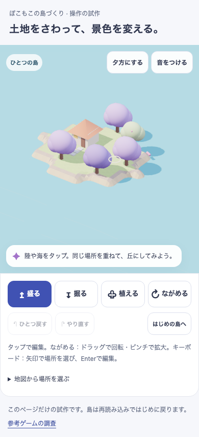
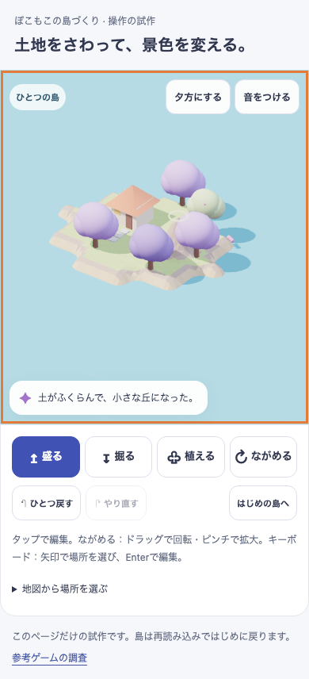
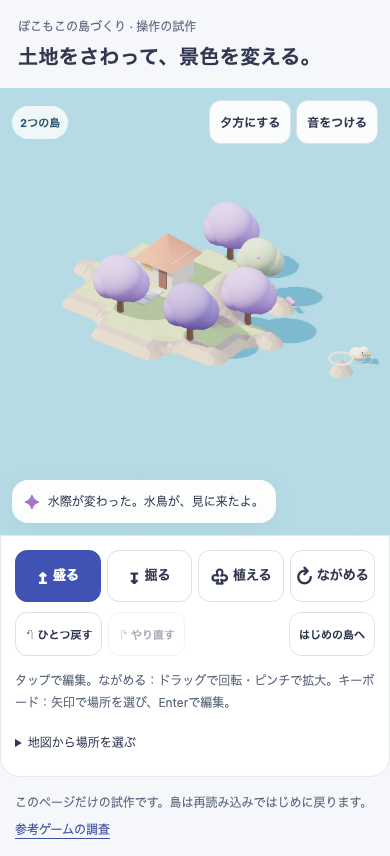
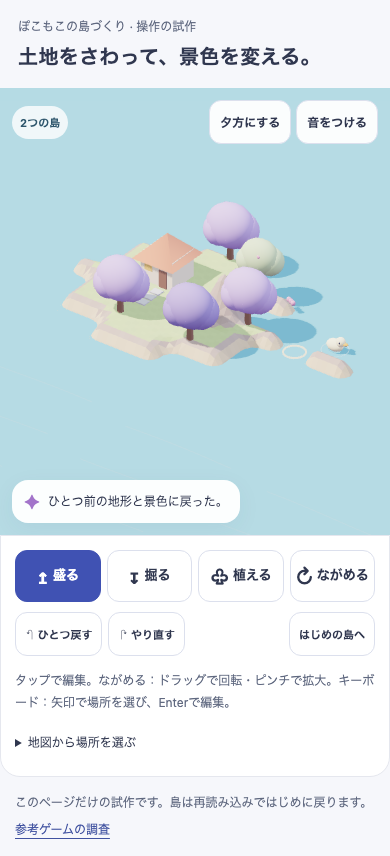
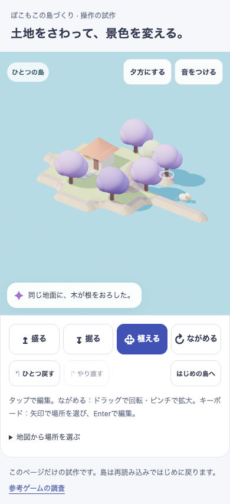
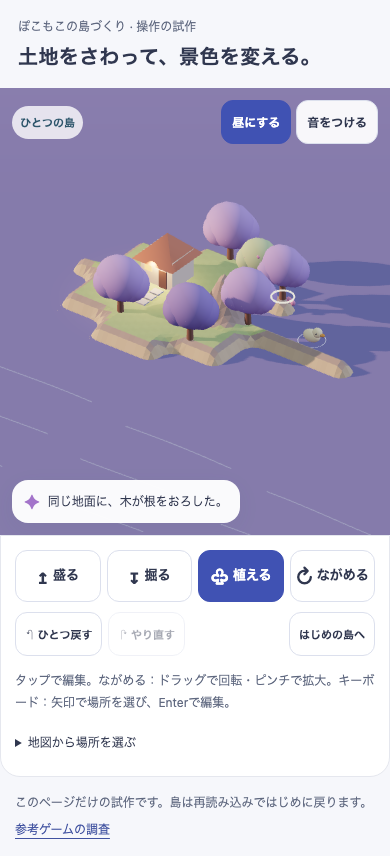
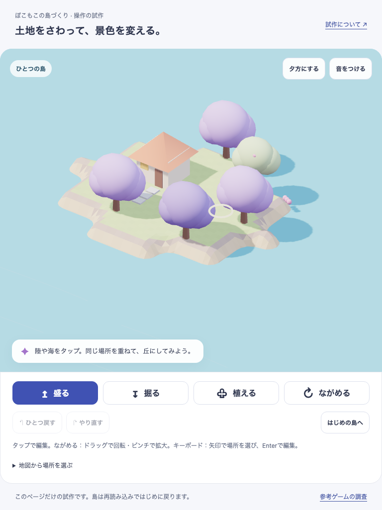
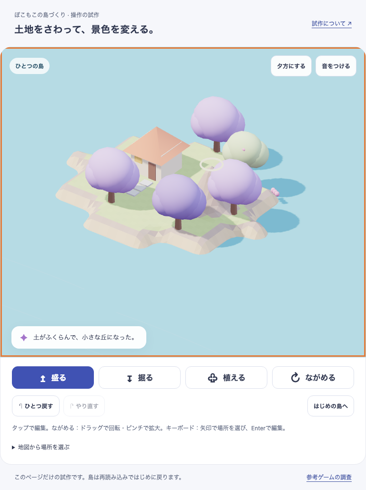
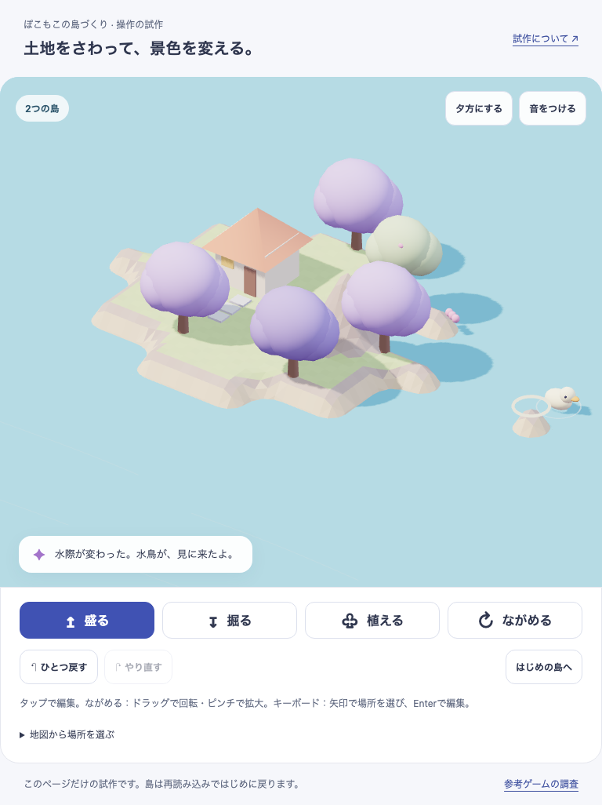
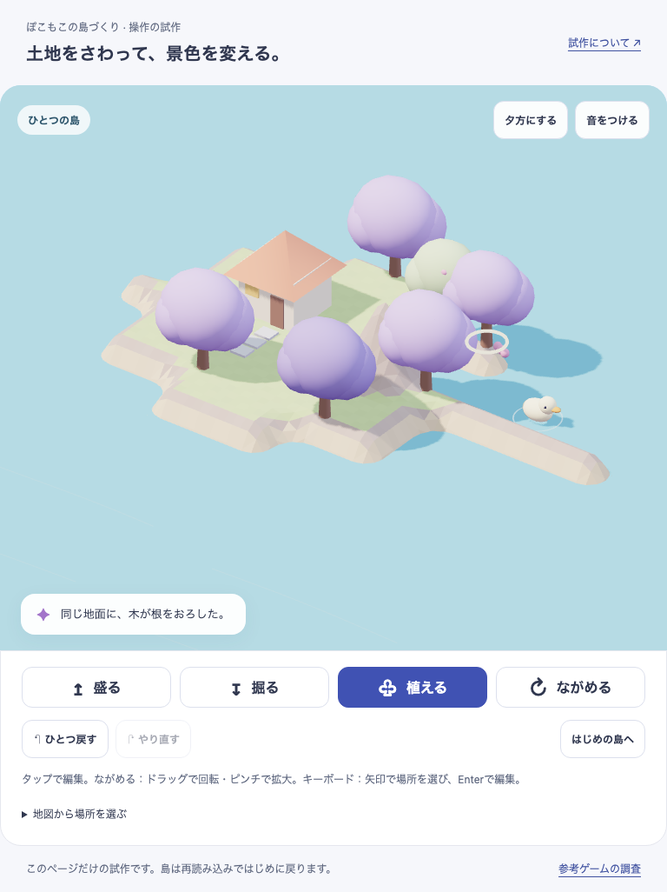
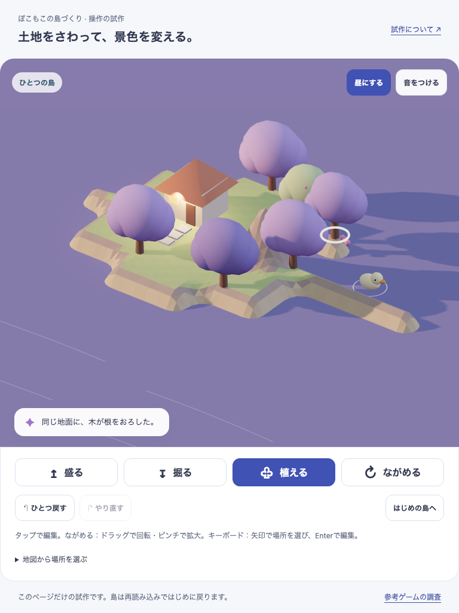
目標にある固有の大樹・回廊・建物、水路・滝、密度の対比や素材の細部は未再現。美術：HOLD。子どもの無説明理解・再訪：未観察。機能：専用試作の対象範囲のみPASS。